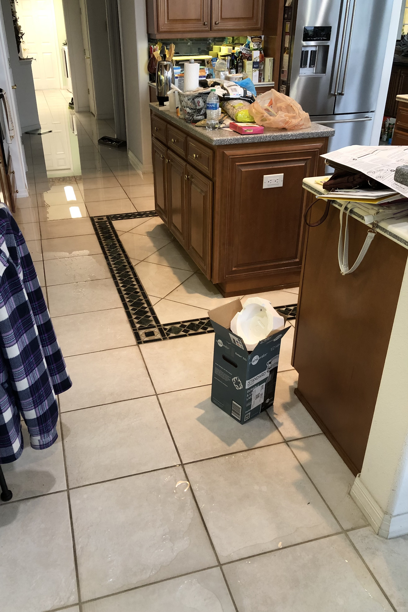

What Traits Make A Good Liminal Space?
Liminal spaces are often places of transition devoid of the typical signs of life, such as an empty shopping mall. There is no one right or wrong way of creating a liminal space, as different images and stylistic choices appeal to different people. For instance, someone who grew up in the early 80s and 90s would have a different perspective on a liminal space image of a retro themed shopping mall than someone born in the early 2000s due to their lived experiences.
Methods To Create Your Own Liminal Space
There are two easy ways of creating your own liminal spaces.
1. Taking a photo in real life.
Oftentimes, taking an image of a familiar place in an unfamiliar context can be effective at creating a liminal space, such as a photo of a school hallway at night, due to the fact that most children never stay at school late enough to see the school in darkness.
2. Using AI to generate images.
Many online AI sources such as DALL E and Craiyon allow you to enter in whatever text you want to be generated into an AI image. Due to the AI compiling source material in an oftentimes clunky and unnerving way, it makes it well suited to generate liminal space images. For example, I entered in “Liminal space of a dark house” and generated this image from Craiyon.
Example Liminal Space
Here is a liminal space photo I took at my grandma's house in Florida after it flooded from a piping problem. This liminal space is much more significant to me than for most other people because I grew up frequently visiting her house, and the content of the image depicts a very unnatural context that I'm not familiar with.

 How To Make Your Own Liminal Space
How To Make Your Own Liminal Space